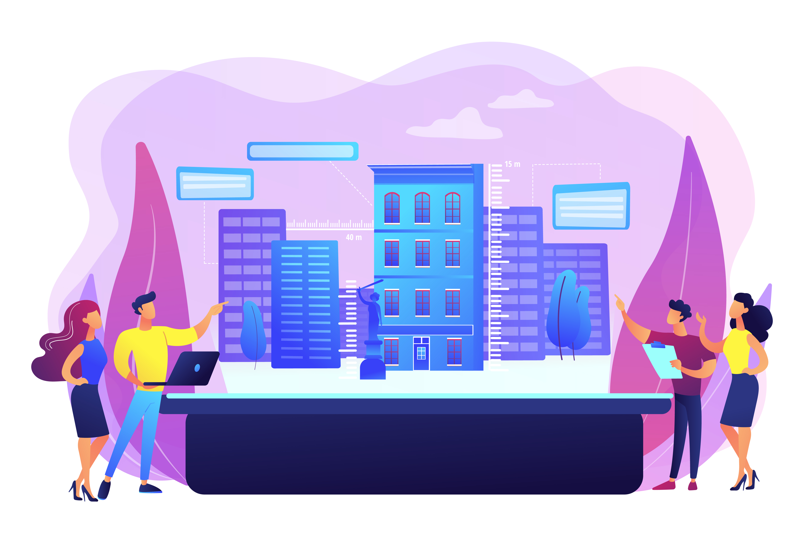
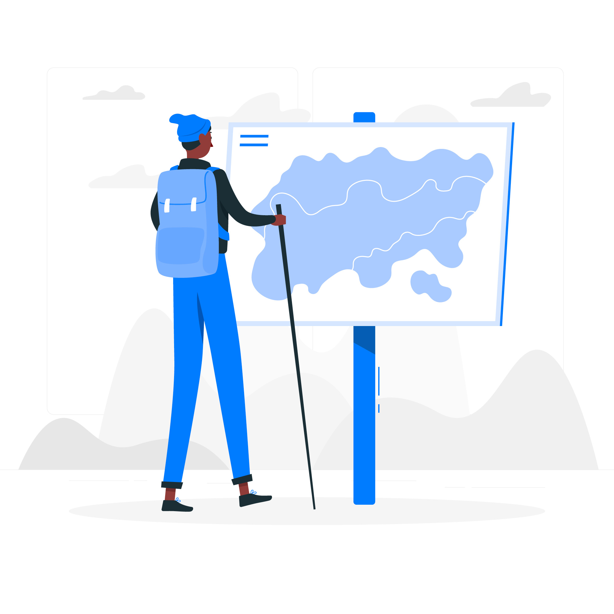

Mes Réalisations
Des projets qui transforment les territoires et créent du lien
Des projets qui transforment les territoires et créent du lien
Découvrez mes réalisations en développement territorial et stratégie commerciale
Coordination d'un programme complet de revitalisation commerciale avec implication des commerçants et des habitants. Mise en place de dispositifs innovants pour attirer une nouvelle clientèle.
Création de cartographies sensibles pour représenter les perceptions et usages des espaces urbains. Ce projet collaboratif implique les habitants dans la représentation de leur quartier.

Mise en place d'un dispositif d'accompagnement pour la rénovation des vitrines commerciales historiques. Ce programme combine préservation du patrimoine et modernisation des commerces.

Réalisation de diagnostics territoriaux pour trois communes rurales avec une méthodologie participative innovante. Intégration des usagers dans le processus d'aménagement.